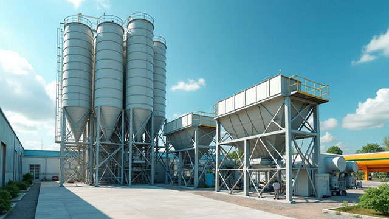

随着环保要求的不断提高，济南混凝土公司积极响应国家绿色发展战略，在环保技术创新方面取得显著成果。本文将从多个维度分析企业在绿色环保技术应用方面的最新实践。

济南钧华商砼绿色环保生产线
一、新型环保材料应用
在原材料选择上，济南混凝土公司率先采用高性能矿物掺合料，有效降低水泥用量，减少碳排放。同时，通过引进新型外加剂技术，提高混凝土的工作性能，实现节能减排。
二、智能化生产管理
公司引入智能化生产控制系统，实现原材料精准配比、生产过程实时监控。通过大数据分析优化生产工艺，显著提升能源利用效率，降低资源浪费。
三、绿色施工技术
在施工环节，采用新型养护技术和温控系统，确保混凝土质量的同时减少能源消耗。特别是在冬季施工中，创新采用环保型保温材料，实现节能与质量的双重保障。
小结
通过持续的技术创新和环保投入，济南混凝土公司在绿色发展道路上迈出了坚实的步伐。这些环保新技术的应用不仅提升了产品质量，也为行业的可持续发展提供了有益借鉴。